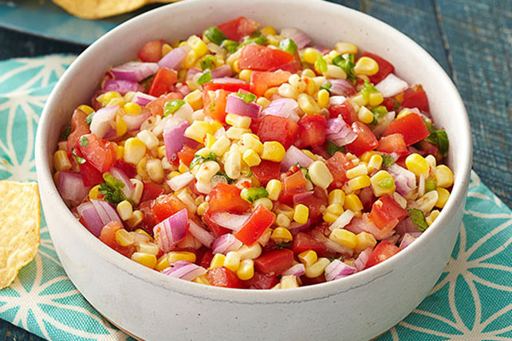

Corn Salsa

Finished Corn Salsa
This colorful corn salad recipe is easy to make with basic ingredients. It’s the perfect make-ahead appetizer or to. You'll find a detailed ingredient list and step-by-step instructions in the recipe below:
Ingredients
1 (15.25 ounce) can sweet corn, drained
1 orange bell pepper, chopped
1 red onion, chopped
1 jalapeno pepper, seeded and minced
1 tablesppon chopped fresh cilantro, or more to taste
1 tablespoon fresh lime juice, or to taste
1 teaspoon honey
1/2 teaspoon crushed red pepper
salt and black pepper to taste
Steps
- Stir corn, bell pepper, red onion, jalapeño, cilantro, lime juice, honey, crushed red pepper, salt, and pepper together in a bowl.
- Chill until ready to serve.
Home